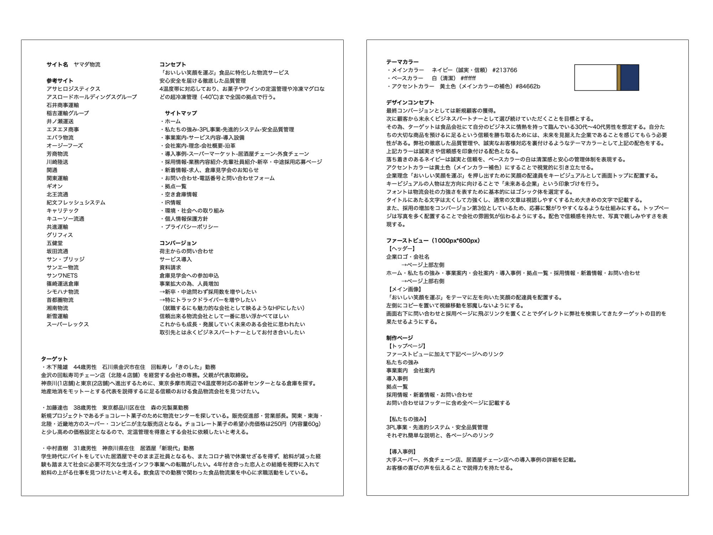
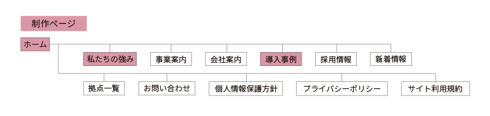
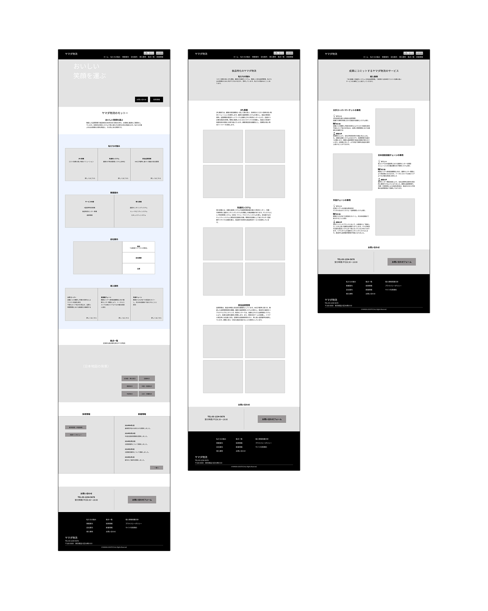
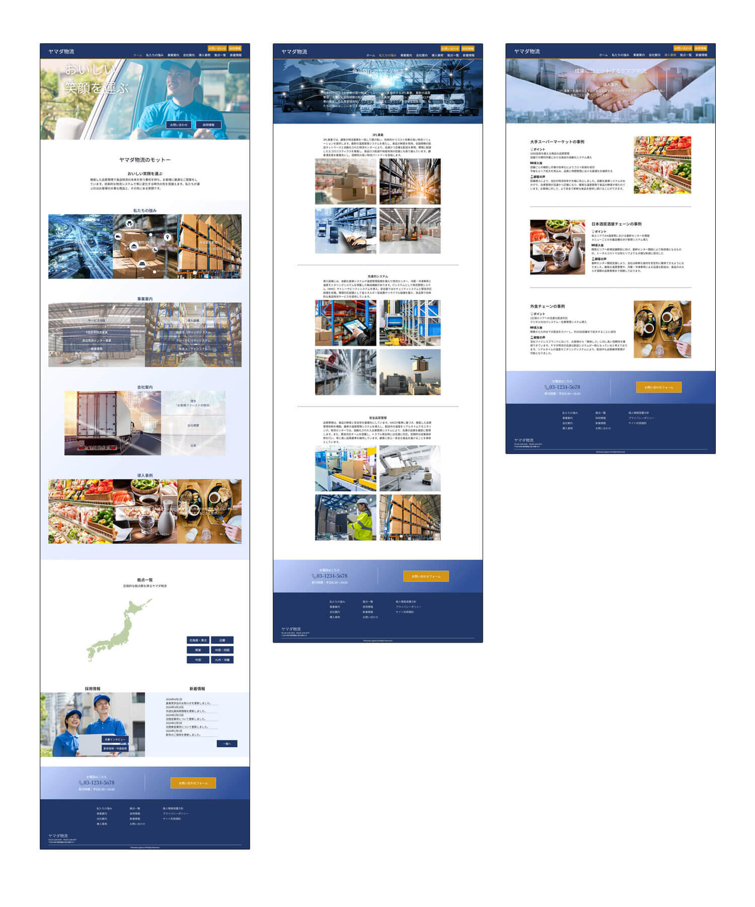

新規顧客代表
木下隆雄
北陸4店舗を経営し、神奈川・東京への進出を計画中。 4温度帯対応の基幹センターとなる倉庫を探しており、 地産地消をモットーとする代表を説得できる信頼できる会社を求めている。
Corporate Website — Self-Initiated
Overview
プロジェクト
自主制作 架空の食品物流会社Webサイト
制作期間
約6週間 2024.06.01 — 2024.07.10
担当範囲
全工程 企画・設計・デザイン・実装
About
「おいしい笑顔を運ぶ」をコンセプトに、食品に特化した架空の物流会社 「ヤマダ物流」のWebサイトを自主制作。 4温度帯に対応した徹底した品質管理を強みとする会社として、 信頼性と誠実さを伝えるデザインを目指した。
新規顧客獲得・倉庫見学会への参加・採用応募増加という 3つのCVを持つコーポレートサイトとして、 それぞれのターゲットに届く導線設計を行った。
Process
企画・情報収集（5h）
食品物流業界を調査し、競合サイトと差別化ポイントを分析。3つのCVとターゲット層を定義した。
コンセプトシート・ワイヤーフレーム（21h）
ペルソナを3人設定し情報設計を整理。ワイヤーフレーム段階からsectionやarticleを意識したセマンティックな構造を設計した。
デザインカンプ（5h）
信頼・誠実・品質管理を視覚的に表現するための配色・フォント・レイアウトを決定した。
HTML / CSS実装（40h）
可読性の高いインデントと統一感のあるコードを意識して実装。セマンティックなマークアップと視認性の高いレイアウトを実現した。
Planning & Structure



Personas — 想定ユーザー
新規顧客代表
北陸4店舗を経営し、神奈川・東京への進出を計画中。 4温度帯対応の基幹センターとなる倉庫を探しており、 地産地消をモットーとする代表を説得できる信頼できる会社を求めている。
定温管理ニーズ代表
新規チョコレート菓子のために物流センターを探している。 関東・東海・北陸・近畿のスーパー・コンビニへの配送を想定し、 定温管理を得意とする会社への依頼を検討中。
転職希望者代表
コロナ禍で給料が減った経験から、 社会に必要不可欠な生活インフラ事業への転職を希望。 結婚を視野に入れ、食品物流業を中心に求職活動をしている。
Design Comp

Design Thinking
顧客から「大切な商品を預けるに足る」信頼を勝ち取ることが最優先。 徹底した品質管理と誠実な対応を視覚的に裏付けるデザインを目指した。 落ち着いた印象で信頼性を伝えることを軸に設計した。
誠実・信頼を表現するコーポレートカラーとしてネイビーをメインに採用。 ベースの白で清潔感と安心の管理体制を表現し、 補色の暗めの黄色をアクセントとして視覚的に引き立たせた。
物流会社の力強さと信頼感を表現するためゴシック体を基本に採用。 タイトルは太字で力強く、本文は視認性を重視して大きめのサイズで記載した。
インデントの統一とセマンティックなマークアップを意識した実装。 ワイヤーフレーム段階からsection・articleで構造化できるよう設計し、 可読性の高いコードを心がけた。
Reflection
職業訓練校での最初の大型制作案件。
ワイヤーフレーム段階からセマンティックな構造を意識するという習慣はこの制作で身についた。
3種類のターゲット（新規顧客・見学会参加者・求職者）が同じサイトを訪れることを想定した導線設計は、
現在の実務でも活きている考え方。
複数のCVを持つサイトをどう設計するかという課題に、
今ならより明確なユーザー行動の文脈を持って取り組めると感じている。